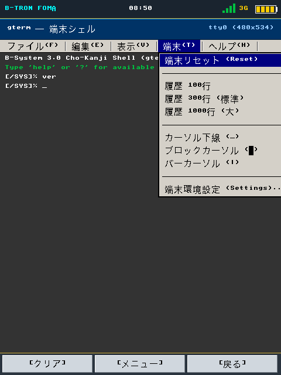
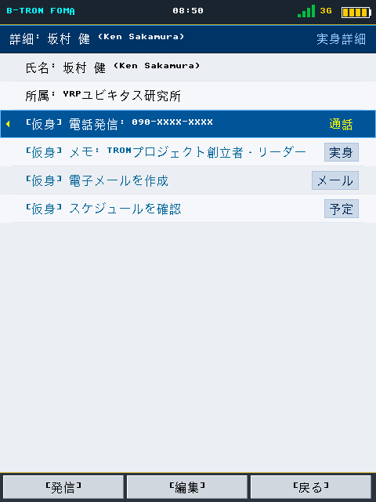
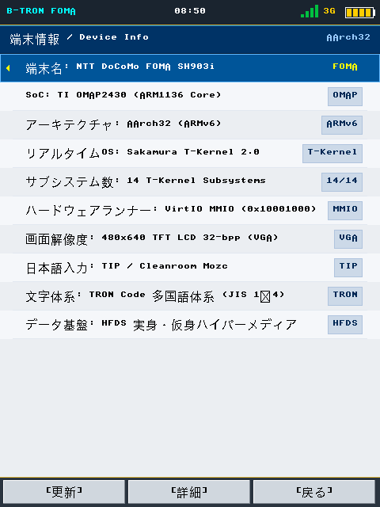
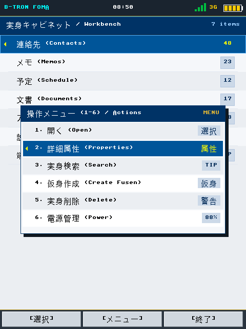
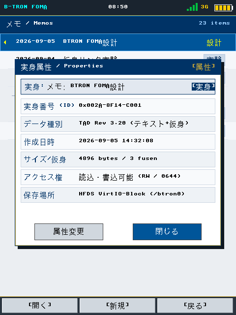
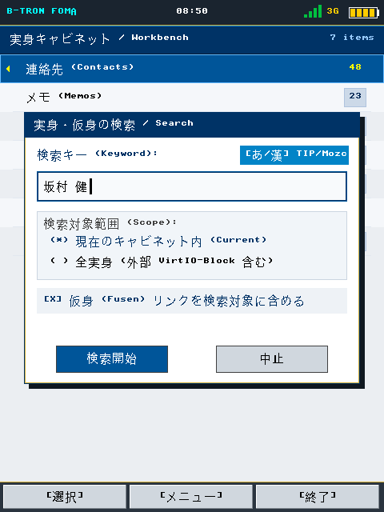
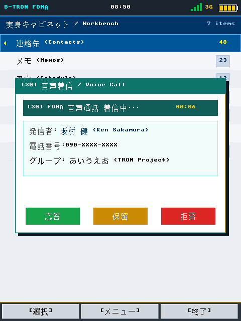

戦術通信・産業エッジにおける位置づけ (Tactical & Industrial Edge Positioning)
分隊・前線向け両手戦術通信機 (Tactical Squad Communicator)
雨天・極寒・化学防護手袋装着下では静電容量式タッチ画面が信頼性を失う。HANDHELD シェルは 5 方向キーによる確定論的フォーカス遷移と 3 系統ソフトキーを中核に据え、実身・仮身（Fusen）による連絡先・暗号メモ・通話呼出・gterm シェル診断を片手または両手で確実に操作できる。坂村 T-Kernel 2.0 AArch32 基盤上で動作し、デスクトップとゼロ #ifdef で同一ソースを共有する。
In rain, freezing cold, or MOPP/gloved operation where capacitive touchscreens fail, HANDHELD provides deterministic 5-way keypad focus and 3 soft keys on Sakamura T-Kernel 2.0 (AArch32), running identical C99 gterm, t_editor, and Real/Virtual Body workflows with zero #ifdef divergence from desktop builds.
電力・通信・物流フィールド保守端末 (Industrial Field Terminal)
変電設備点検、基地局保守、鉄道保線、および危険物倉庫のハンディターミナルでは、高輝度縦長画面での一覧視認性と明示的な確認モーダルが安全基準を満たす。HANDHELD シェルは 240×345 から 480×864 に及ぶ産業・通信機縦長パネル群を単一アーキテクチャで統合し、属性シート・検索ダイアログ・電源管理シートを OS 標準として提供する。
Tailored for utility line maintenance, rail inspection, telecom base-station servicing, and hazardous-area PDAs, HANDHELD unifies portrait panels from 240×345 through 480×864 with OS-native confirmation modals, metadata property sheets, and deterministic power-state management.
対象解像度 (Requested Resolutions)
基準解像度 640×480 および 240×345〜480×864 の縦長通信機パネル群が HANDHELD を選択する。実装ソース：src/desktop/ui/handheld/、src/cores/core_foma.c。
| BTRON_RES | 解像度 (Pixels) | パネル規格 | 適用 |
|---|---|---|---|
| BTRON_RES_SVGA_640X480 | 640×480 | SVGA Desktop / 480×640 Portrait | 基準公開フレーム・T-Kernel 2.0 AArch32 |
| BTRON_RES_FWVGA_480X864 | 480×864 | Full Wide VGA | 高精細縦長通信機（F905i / F-01A 系） |
| BTRON_RES_FWVGA_480X854 | 480×854 | Full Wide VGA | ワイド VGA 縦長端末（SH905i / SH-01A 系） |
| BTRON_RES_VGAPLUS_480X690 | 480×690 | VGA+ | OMAP2430 ARM1136 端末（N903i 系） |
| BTRON_RES_WQVGA_240X432 | 240×432 | Wide QVGA | 高視認・易操作系端末（F884i 系） |
| BTRON_RES_WQVGA_240X400 | 240×400 | Wide QVGA | OMAP2430 縦長端末（SH903i 系） |
| BTRON_RES_QVGAPLUS_240X345 | 240×345 | QVGA+ | ARM9 縦長通信機（N901iC / N902i 系） |
HANDHELD — 480×640 実機フレームバッファ画面 (18 Native Captures)
SDK のフレームバッファが直接描画した 480×640 VGA 縦画面。5 方向キーによるフォーカス遷移、3 ソフトキー、実身・仮身（Fusen）、および OS 標準ダイアログ一式を収録。
Direct framebuffer captures of the 480×640 portrait HANDHELD shell: core cabinet/editor/terminal applications followed by system dialogs and overlays.


btron:/> シェルを実行。




開いたダイアログ・操作メニュー (Opened Dialogs & Overlays)
BTRON HMI 設計指針に準拠した浮動メニュー、削除確認、実身属性、TIP 検索、電源管理、音声着信、および標準 About ボックス。







app_menu_create_about_dialog から自動生成される標準 About ボックス。HANDHELD 端末ハードウェア記録・QEMU 適合度 (2004–2009 Handset Matrix)
HANDHELD シェルが対象とする 2004–2009 年の通信機パネル群。TI OMAP（ARM9 / ARM11）とルネサス SH-Mobile（SuperH）に大別され、upstream QEMU（-M virt / レガシー ARM）での命令セット一致とユーザーランド起動見込みを 4 段階で評価している。
Published panel dimensions and upstream QEMU AArch32 feasibility grades across the 2004–2009 TI OMAP and Renesas SH-Mobile communicator lineage.
| 端末グループ (Model Group) | メイン画面 | SoC / CPU | アーキテクチャ | QEMU 適合度 |
|---|---|---|---|---|
| Fujitsu F900i / F900iT | 240×320 | TI OMAP (161x) | ARM9 (ARMv5) | Good (arm926) |
| Fujitsu F901iC | 240×320 | SH-Mobile3 | SuperH SH-3 | Poor (no SH) |
| Fujitsu F902i | 240×320 | SH-Mobile | SuperH | Poor |
| Fujitsu F903i | 240×320 | SH-Mobile G1 | SuperH + ARM | Medium (arm1136) |
| Fujitsu F905i | 480×864 | SH-Mobile G2 | ARM1136 + SHX2 | Good (arm1136) |
| NEC N900i / N901iC | 240×320 / 240×345 | TI OMAP1610 | ARM9 (ARMv5) | Good (arm926) |
| NEC N902i | 240×345 | TI OMAP | ARM9 | Good |
| NEC N903i | 480×690 | TI OMAP2430 | ARM1136 (ARMv6) | Excellent (arm1136) |
| Panasonic P900i–P903i | 240×320 | TI OMAP (shared) | ARM9 / ARM11 | Good–Excellent |
| Sharp SH900i | 240×320 | TI OMAP1610 | ARM9 | Good (arm926) |
| Sharp SH903i | 240×400 | TI OMAP2430 | ARM1136 | Excellent |
| Sharp SH903iTV / SH905i / SH-01A | 240×400 / 480×854 | SH-Mobile G1/G2/G3 | ARM1136 + SuperH | Good (arm1136) |
| 905SH / 911SH | 240×400 | Proprietary multimedia | Mixed | Medium |
| Raku-Raku F880iES / F883i / F884i | 240×320 / 240×432 | SH-Mobile G1 | ARM + SuperH | Medium–Good |
| Raku-Raku F-01A | 480×864 | SH-Mobile G series | ARM1136 + SuperH | Good (arm1136) |
-M virt -cpu arm1136 と高い一致度を示し、実用的なユーザーランド起動が可能。arm926 または arm1136 で利用可能。周辺チップ完全再現不要時に好適。